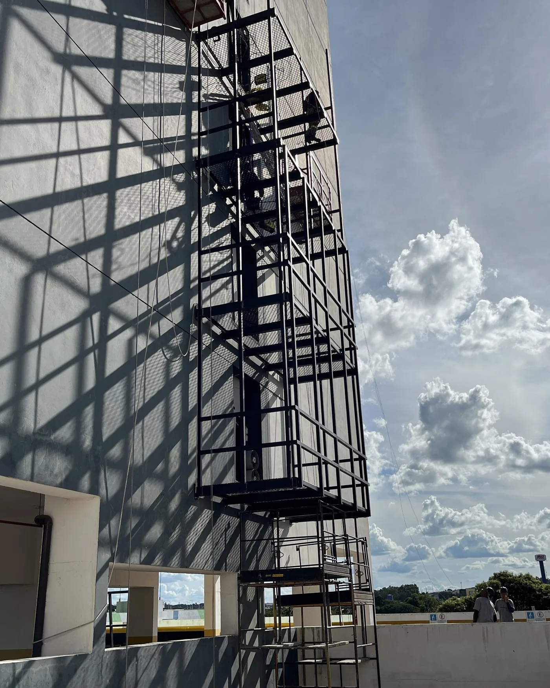
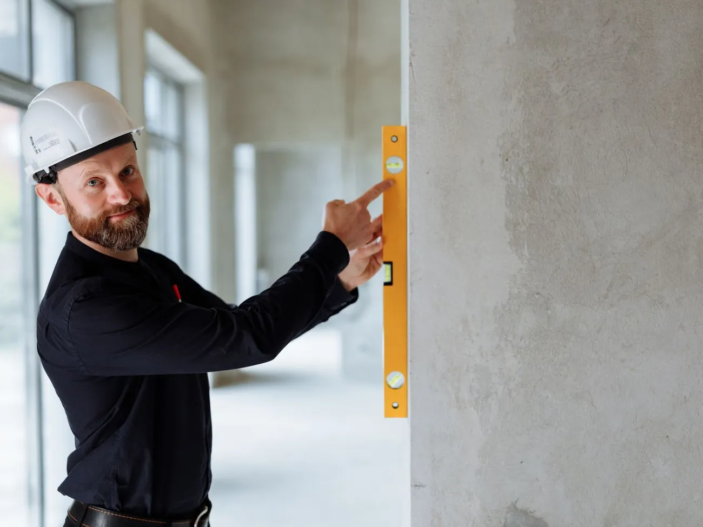
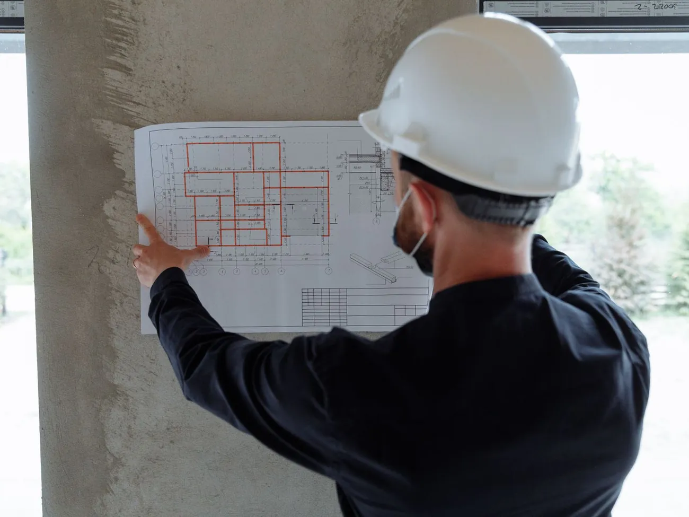

Quem diagnostica a patologia é quem executa o reparo.
A LSE é uma oficina de engenharia especializada em recuperação estrutural, reforço estrutural e impermeabilização — obras de alta responsabilidade técnica, com equipe enxuta e supervisão direta do engenheiro responsável.

Nem escritório, nem construtora, nem empreiteiro.
A LSE ocupa de propósito um lugar que o mercado deixou vago: o de quem tem a qualificação técnica de um escritório e, ao mesmo tempo, põe a mão na obra.
- Escritório Atua com projetos e laudos. A LSE atua na execução das soluções técnicas — o diagnóstico não para no papel.
- Construtora Equipe grande e supervisão diluída. A LSE trabalha com equipe enxuta e supervisão direta do responsável técnico — é assim que supera as dificuldades com mão de obra.
- Empreiteiro Executa sem lastro. A LSE entrega toda a qualificação, garantia e responsabilidade técnica que as normas atuais exigem.

Serviço técnico mais qualificado promove sistemas construtivos mais duradouros e obras menos recorrentes — o que se percebe na preservação do valor imobiliário, na preservação das garantias da construtora e na redução da necessidade de aumento da taxa condominial.LSE — Engenharia Construtiva
Seis frentes, uma lógica: tratar a causa, não o sintoma.
Toda intervenção começa pela identificação da origem da patologia. Reparar o sintoma sem diagnosticar a causa é o que faz a obra voltar. Clique em uma frente para ver imagens do tipo de serviço.
Descreva a patologia pelo WhatsApp e mande fotos. Quem responde é o engenheiro responsável, não um vendedor.
Solicitar orçamentoOnde a LSE se diferencia de cada alternativa.
| Critério | Escritório de engenharia | Construtora | Empreiteiro | LSE |
|---|---|---|---|---|
| Diagnostica a patologia | Sim | Não é o foco | Não | Sim |
| Executa o reparo | Não | Sim | Sim | Sim |
| Supervisão direta do responsável técnico em obra | Não executa | Equipe grande, supervisão diluída | Não há responsável técnico | Equipe enxuta, RT em obra |
| ART de execução e seguro de responsabilidade civil | ART de projeto ou laudo | Varia | Não | Em toda obra |
| Relatório de qualidade de execução ao final | Não se aplica | Varia | Não | Sempre |
Quer entender qual dessas alternativas resolve o seu caso? Fale direto com o responsável técnico.
Solicitar orçamentoEdificações atendidas em Curitiba e Presidente Prudente.
Escopos executados e documentados em proposta técnica. As referências de contato de cada condomínio são fornecidas sob solicitação, com autorização do síndico.
-
Edifício Cosmopolitan
Jardim Paulista · Presidente Prudente/SPGerenciamento e execução de fachada técnica metálica; análise e proposta de solução para a baixa performance dos aparelhos de ar-condicionado; adequação do SPCI para liberação do AVCB.
-
Edifício Ravi
Mercês · Curitiba/PRExecução da substituição da manta impermeabilizante e reconstituição do porcelanato do piso.
-
Edifício Brighton House
Batel · Curitiba/PRExecução da manutenção da impermeabilização do reservatório d’água e individualização hidráulica dos reservatórios.
-
Edifício Dr. Goulin
Hugo Lange · Curitiba/PRTratamento de trincas, aplicação de camada impermeabilizante e reconstituição de pintura e acabamento em unidade privativa.
-
Edifício Trianon
Jardim Aquinópolis · Presidente Prudente/SPLaudo técnico de patologias da construção civil.
Tem uma obra parecida no seu condomínio? Peça uma proposta com escopo, prazo e preço fechados.
Solicitar orçamentoUma obra de recuperação vale o que vale quem a assina.
Na LSE, o profissional que emite o diagnóstico é o mesmo que supervisiona a execução e assina a ART. Não há intermediário entre o laudo e a obra.
- Pós-graduação em Patologias das Construções Universidade Tecnológica Federal do Paraná — UTFPR
- MBA em Gestão de Projetos Fundação Getulio Vargas — FGV
- Graduação em Engenharia Civil Universidade Positivo
- 16 anos de experiência em construção civil com destaque na atuação em obras em diferentes estados do Brasil

Fale com o Eng. Lucas Seckler (CREA-PR 122275/D) sobre a sua obra.
Falar com o engenheiroO que já está incluso em toda proposta.
- Mão de obra, materiais e equipamentos A LSE fornece tudo o que a execução exige.
- ART de execução Anotação de Responsabilidade Técnica emitida para a obra.
- Seguro de responsabilidade civil Cobertura de responsabilidade civil de obras.
- Impostos e taxas A proposta já contempla todos os tributos da execução.
- Relatório de qualidade Relatório de qualidade de execução entregue ao final da obra.
Três passos até uma proposta com escopo fechado.
Fale com o engenheiro
Descreva o problema e mande fotos pelo WhatsApp. Quem responde é o responsável técnico — não um vendedor.
Vistoria e diagnóstico
Identificamos a origem da patologia, não só o sintoma, e definimos o escopo real da intervenção.
Proposta com escopo fechado
Você recebe escopo, premissas, prazo e preço — com ART de execução e seguro de responsabilidade civil já inclusos.
Atendimento em Curitiba e região metropolitana e em Presidente Prudente e região.